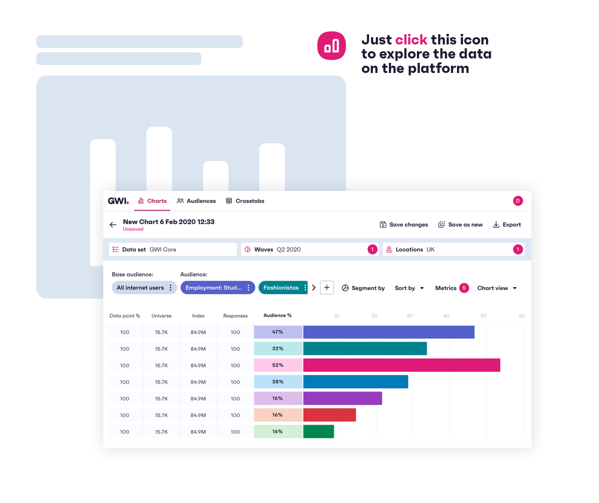

GWI Core · Q2–Q3 2025
Market Report:
Taiwan
February 2026

5,254 consumers aged 16+
Contents
04
Population Profile
12
Digital Engagement
19
Social Media
23
The Purchase Journey
27
More from GWI
Introduction
This report offers a deep dive into Taiwan, unpacking the behaviors, attitudes, and trends shaping consumers on the ground.
Designed to support smarter planning and more confident decision-making, it helps brands understand what's driving audiences locally — and how to respond.
If you're looking for insights on additional markets, check out our Reports page or get in touch with our team at insightservices@gwi.com.
Methodology
Data in this report comes from GWI Core, our flagship dataset across 54 markets. We interview a million people a year for this (aged 16+ in some countries, or 16–64 in others), asking them a range of questions about their attitudes, behaviors, lifestyles, and digital habits.
Questions are harmonized across all countries, meaning data can be compared like-for-like between any markets or regions, and each question is asked monthly or quarterly to representative samples, allowing us to see how trends are changing.
GWI sets comprehensive quotas on age, gender, and educational attainment (as well as nationality, racial identity, and region in some markets) to ensure all samples are fully representative of online adult populations. In markets with lower internet penetration rates, online populations tend to be younger, more affluent, and better educated than the total population.
When we refer to index figures, these are comparisons of a given group against the average (1.00). An index of "1.20" means that a given group is 20% above the average.
Recreate any chart in seconds

Population Profile
Population Profile
Demographics
05
Source: GWI Core Q2–Q3 2025 | Base: 5,254 consumers aged 16+ | Market: Taiwan
Population Profile
Generational Overview
06
Attitudes are largely shaped by where people are in life. Younger consumers are figuring out who they are, pushing boundaries, and laying the groundwork for what comes next. Millennials are balancing ambition with responsibility, with greater focus on careers. Meanwhile, older generations tend to prioritize practicality, tradition, and long-term wellbeing.
Check our Reports page for insights on Gen Alpha and baby boomers
Source: GWI Core Q2–Q3 2025 | Base: 5,254 consumers aged 16+ | Market: Taiwan
Population Profile
The World of Work
07
{{ b.l }}
{{ b.v }}
Please note, respondents can also select "Other"
Today, it's common for people to juggle extra projects on the side or mix different types of work. For some, side hustles are about boosting income; for others, they're a way to build skills, pursue personal goals, or grow a personal brand.
Many workers, especially younger groups, see themselves as influential and entrepreneurial. While the mindset is forward-looking, the reality can be demanding — feeling overworked is far from unusual in today's work culture.
Source: GWI Core Q2–Q3 2025 | Base: 5,254 consumers aged 16+ | Market: Taiwan
Population Profile
Lifestyle & Interests
08
Source: GWI Core Q2–Q3 2025 | Base: 5,254 consumers aged 16+ | Market: Taiwan
Population Profile
Sport & Travel
09
{{ b.l }}
{{ b.v }}
Source: GWI Core Q2–Q3 2025 | Base: 5,254 consumers aged 16+ | Market: Taiwan
Population Profile
Personal Finance
10
Source: GWI Core Q2–Q3 2025 | Base: 5,254 consumers aged 16+ | Market: Taiwan
Population Profile
Property & Vehicle Ownership
11
{{ b.l }}
{{ b.v }}
{{ s.v }}
{{ s.l }}
Source: GWI Core Q2–Q3 2025 | Base: 5,254 consumers aged 16+ | Market: Taiwan
Digital Engagement
Digital Engagement
Device Ownership
13
Today's device landscape isn't about swapping one screen for another — it's about how they work together. Consumers have varied tech set-ups, with different devices playing different roles, from staying productive to switching off at home. This multi-device behavior shows how comfortable people have become with tech — and how much they expect experiences to move seamlessly across screens. Smart home products push this even further, shifting tech from something we actively use to something that quietly runs in the background.
Source: GWI Core Q2–Q3 2025 | Base: 5,254 consumers aged 16+ | Market: Taiwan
Digital Engagement
Consumption by Media Type
14
The average number of hours spent consuming the following in the last week and on the most recent occasion
Weekly average
Latest occasion
{{ r.l }}
{{ r.a }}{{ r.b }}
Almost every year, we hear the stories about the "death of social media." But that assumes we all agree on what "social media" even means. The way we measure it — across feeds, Reels, and TikToks — highlights just how much the definition has expanded.
Taken alone, "classic" social media activity consumes a big chunk of consumers' time each week. Combine that with time spent watching short clips and other videos — at least some of which is likely on social platforms — and the share of eyeball time rises still more.
Source: GWI Core Q2–Q3 2025 | Base: 5,254 consumers aged 16+ | Market: Taiwan
Digital Engagement
Mobile Habits
15
Source: GWI Core Q2–Q3 2025 | Base: 5,254 consumers aged 16+ | Market: Taiwan
Digital Engagement
TV & Music Streaming
16
% who say they've used the following TV and music streaming services in the last month
TV
{{ b.l }}
{{ b.v }}
Music
{{ b.l }}
{{ b.v }}
Source: GWI Core Q2–Q3 2025 | Base: 5,254 consumers aged 16+ | Market: Taiwan
Digital Engagement
Gaming Styles & Preferences
17
Source: GWI Core Q2–Q3 2025 | Base: 5,254 consumers aged 16+ | Market: Taiwan
Digital Engagement
AI Adoption & Impact
18
AI is moving from hype to habit, but adoption is being driven by utility rather than enthusiasm. People are starting to use it for everyday tasks — from answering questions to getting quick advice — but that doesn't mean full confidence has arrived just yet.
While many see the potential benefits, there's still caution around how reliable, human, or trustworthy AI feels. For brands, success will come from clear value, low friction, and trust built over time.
Source: GWI Core Q2–Q3 2025 | Base: 5,254 consumers aged 16+ | Market: Taiwan
Social Media
Social Media
Platform Breakdown
20
Total pop
Gen Z
{{ r.l }}
{{ s.v }}
Certain platforms like LINE are everyday staples, used by almost everyone to stay in touch.
Others like Instagram and Threads skew younger, appealing through visual content and creativity. Gen Z in particular are drawn to platforms that feel expressive, entertaining, and plugged into what's happening now. They're not just more likely to use these platforms, they often favor them too.
Cultural power may be harder to quantify than reach, but it matters just as much.
Source: GWI Core Q2–Q3 2025 | Base: 5,254 consumers aged 16+ | Market: Taiwan
Social Media
Social Media Motivations & Follows
21
{{ b.l }}
{{ b.v }}
Social media patterns are more stable than people often give them credit for. Multi-networking is going strong, and associations between certain platforms and activities remain. What's more, the original raison d'être for social — keeping up with friends — still ranks top.
Though, a fairly close second is to fill spare time, with content-driven reasons for logging on climbing in importance over time. Social may evolve gradually, but these subtle shifts are worth monitoring.
Check our Connecting the Dots 2026 report for more insight into this
Source: GWI Core Q2–Q3 2025 | Base: 5,254 consumers aged 16+ | Market: Taiwan
Social Media
Social Video and Attitudes Towards Consumption
22
Video
{{ b.v }}
{{ b.l }}
Short-form video
{{ b.v }}
{{ b.l }}
Source: GWI Core Q2–Q3 2025 | Base: 5,254 consumers aged 16+ | Market: Taiwan
The Purchase Journey
The Purchase Journey
Ads & Brand Relationships
24
Brand relationships today are built on more than awareness or exposure. Consumers research before buying, rely on a mix of personal and third-party recommendations, and expect brands to earn trust over time. Loyalty still exists, but it's shaped by how brands behave, not just what they sell.
While eco-friendliness and DEI feel less urgent for many people right now due to financial pressures, that doesn't mean brands should pause these initiatives. They're best-off reframing them — focusing on and demonstrating how they add value to customers.
Source: GWI Core Q2–Q3 2025 | Base: 5,254 consumers aged 16+ | Market: Taiwan
The Purchase Journey
Marketing Touchpoints
25
% who mainly look for more information about brands, products, or services via the following
{{ r.l }}
{{ r.v }}
% who say the following would most increase their likelihood of buying a product
{{ r.l }}
{{ r.v }}
Source: GWI Core Q2–Q3 2025 | Base: 5,254 consumers aged 16+ | Market: Taiwan
The Purchase Journey
How People Connect with Brands
26
{{ s.l }}
{{ r.l }}
{{ s.v }}
Source: GWI Core Q2–Q3 2025 | Base: 5,254 consumers aged 16+ | Market: Taiwan
More from GWI
Get answers on 1M consumers in seconds
Try Agent Spark
Conversational AI interface allowing you to ask questions in natural language.